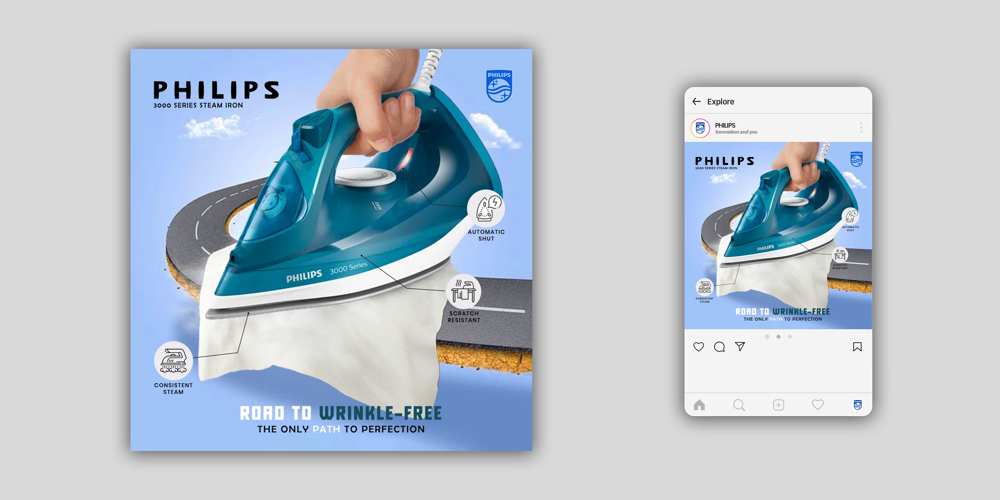
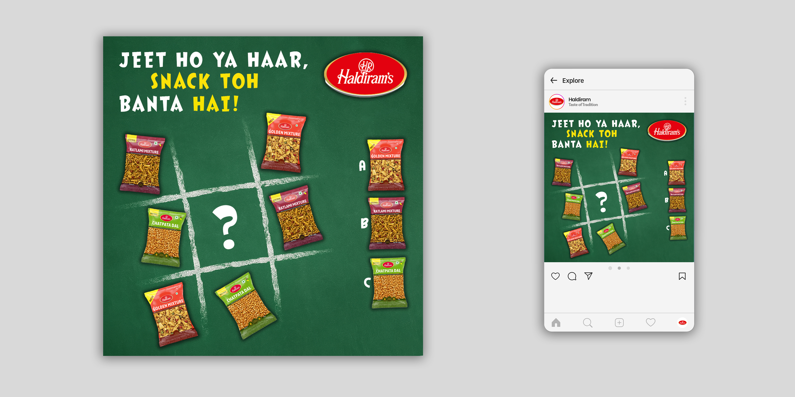
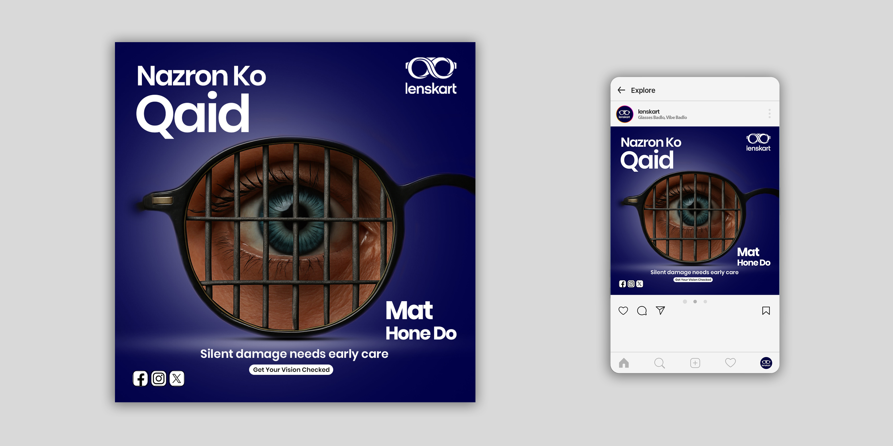
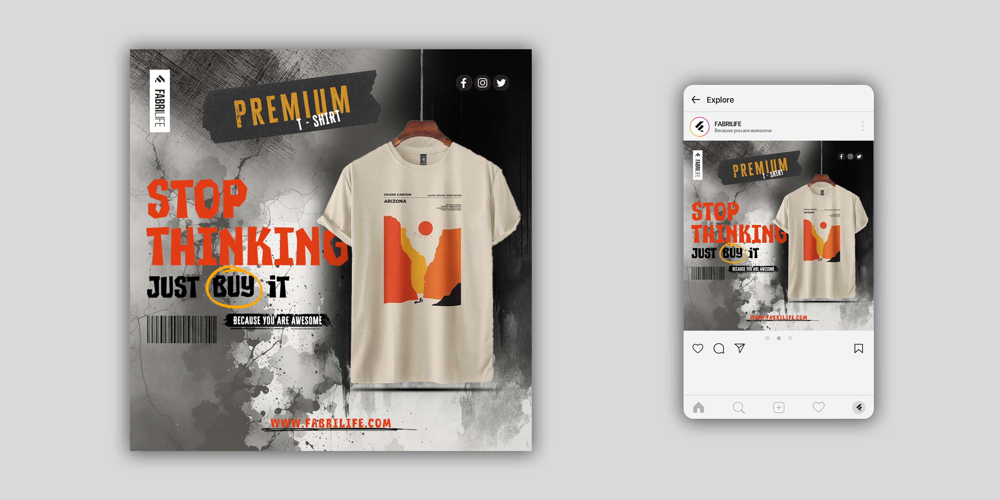

Projects





UI/UX Designer • Visual Creator • Motion Designer
I’m a passionate Graphic Designer with a strong interest in creating visuals that are clean, meaningful, and creatively impactful. As a fresher, I focus on learning, experimenting, and delivering designs that connect with the audience.
I enjoy working across branding, logo design, packaging, magazine layouts, and social media graphics, bringing ideas to life through thoughtful design decisions. My goal is simple — to create designs that not only look good but communicate clearly.
With hands-on experience in tools like Photoshop, Illustrator, InDesign, CorelDRAW, Premiere Pro, and Canva, I love exploring different styles and concepts to produce fresh and engaging work. I aim to collaborate with brands, startups, and creators to build thoughtful and engaging visual experiences that leave a lasting impression.
Email: sushil@example.com